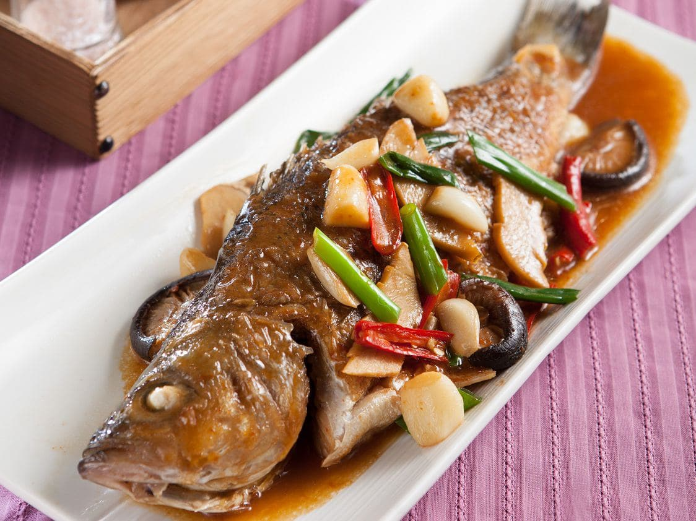

文字+圖片練習 學號:90934266 姓名:王麗雯 首頁:紅燒魚
料理陳列展示
紅燒魚
準備材料
| A:內餡 |
加州鱸 |
蔥段 |
蔥段 |
乾香菇 |
辣椒片 |
太白粉水 |
薑 2-3片
|
| B:調味料 |
米酒 1大匙 |
醬油 1大匙 |
鹽 1/2茶匙 |
白胡椒粉 1/4茶匙 |
太白粉 1大匙 |
麻油 1大匙 |
|
A:內餡
- 加州鱸
- 蔥段 ( 501g)
- 蔥段
- 乾香菇
- 辣椒片
- 太白粉水
- 薑 2-3片
B:調味料
- 米酒 1大匙
- 醬油 1大匙
- 鹽 1/2茶匙
- 白胡椒粉 1/4茶匙
- 太白粉 1大匙
- 麻油 1大匙
1.將魚洗淨後拭乾；乾香菇泡水至軟後切塊，備用。
2.熱鍋，倒入適量的油，待油熱之後轉小火，放入魚煎約3分鐘後，翻面煎至兩面呈金黃色，將魚盛起備用。
3.另熱鍋，倒入少許油，放入香菇塊、蔥段、薑片、蒜頭、辣椒片爆香，再放入醬油、水、米酒、糖煮沸，再放入魚燒約3分鐘後翻面。
4.再燒至湯汁略收，先將魚盛盤，再將鍋裡的湯汁以太白粉水勾芡，淋至魚上即可。
